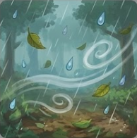
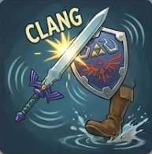
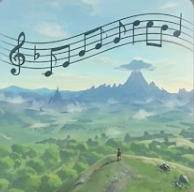

Sonidos Ambientales (Paisaje Sonoro)
Grabaciones reales de naturaleza. El audio es dinámico: la lluvia suena diferente sobre madera, roca o metal, y el viento cambia de tono según la altitud.

Efectos de Sonido (Foley y SFX)
Énfasis en la materialidad. El choque de las espadas, el roce de la ropa y los pasos de Link varían según el peso del equipo y el terreno.

Música de Fondo (BGM Minimalista)
A diferencia de otros Zelda, aquí la música es fragmentada. El piano aparece de forma sutil para no opacar los sonidos de la naturaleza.